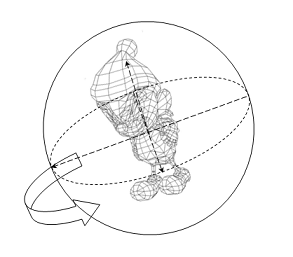

com.docomostar.opt.ui.eruption.Object3D
com.docomostar.opt.ui.eruption.TrackBall
com.docomostar.opt.ui.eruption.Object3D
com.docomostar.opt.ui.eruption.TrackBall
|
|||||||||
| 前のクラス 次のクラス | フレームあり フレームなし | ||||||||
| 概要: 入れ子 | フィールド | コンストラクタ | メソッド | 詳細: フィールド | コンストラクタ | メソッド | ||||||||
Object
public final class TrackBall
トラックボール処理を行うクラスです。
トラックボール処理とは、オブジェクトを仮想の球体で覆い、その球体をドラッグすることにより、オブジェクトの座標変換を容易に行うことが出来る機能です。
MascotCapsule eruption でサポートされている機能は、移動と回転処理です。

| フィールドの概要 | |
|---|---|
static int |
MCE_DRAG_FUNC_MOVE_XY
トラックボール処理によって行う座標変換の種別：xy軸(左右)移動を表します(=1)。 |
static int |
MCE_DRAG_FUNC_MOVE_Z
トラックボール処理によって行う座標変換の種別：z軸(前後)移動を表します(=2)。 |
static int |
MCE_DRAG_FUNC_ROLL
トラックボール処理によって行う座標変換の種別：回転を表します(=3)。 |
static int |
MCE_DRAG_FUNC_UNDEF
トラックボール処理によって行う座標変換の種別：未定義を表します(=0)。 |
static int |
MCE_MOVE_MODE_CAMERA
トラックボール処理の動作モード：カメラを移動させます(=1)。 |
static int |
MCE_MOVE_MODE_OBJECT
トラックボール処理の動作モード：モデルを移動させます(=0)。 |
| コンストラクタの概要 | |
|---|---|
TrackBall()
TrackBall を生成します。 |
|
| メソッドの概要 | |
|---|---|
void |
drag(int px,
int py)
ドラッグ動作を行います。 |
void |
dragStart(int px,
int py,
int func)
ドラッグ動作の開始位置を設定します。 |
void |
dragStop(int px,
int py)
ドラッグ動作の終了位置を設定します。 |
int |
getMoveMode()
動作モードを取得します。 |
void |
getTransform(Transform transform)
計算済の Transform を取得します。 |
void |
setCamera(Camera camera,
Transform transform)
トラックボール処理に使用するカメラを設定します。 |
void |
setCamera(Camera camera,
Vector3D pos,
Vector3D look,
Vector3D up)
トラックボール処理に使用するカメラを設定します(LookAt指定)。 |
void |
setMoveMode(int mode)
動作モードを設定します。 |
void |
setScreenSize(int sx,
int sy)
スクリーンサイズを設定します。 |
void |
setTransform(Transform transform)
オブジェクトの初期位置を指定する Transform を設定します。 |
| クラス com.docomostar.opt.ui.eruption.Object3D から継承されたメソッド |
|---|
dispose, equals, findObject3D, findObject3D, getClassType, getUserId, hashCode, isDisposed, isRenderEnable, setRenderEnable, setUserId |
| クラス Object から継承されたメソッド |
|---|
getClass, notify, notifyAll, toString, wait, wait, wait |
| フィールドの詳細 |
|---|
public static final int MCE_DRAG_FUNC_UNDEF
public static final int MCE_DRAG_FUNC_MOVE_XY
public static final int MCE_DRAG_FUNC_MOVE_Z
public static final int MCE_DRAG_FUNC_ROLL
public static final int MCE_MOVE_MODE_OBJECT
public static final int MCE_MOVE_MODE_CAMERA
| コンストラクタの詳細 |
|---|
public TrackBall()
TrackBall を生成します。
初期値は以下の通りです。
MCE_MOVE_MODE_OBJECT
MCE_DRAG_FUNC_UNDEF
| メソッドの詳細 |
|---|
public final void setMoveMode(int mode)
デフォルトの移動モードは、MCE_MOVE_MODE_OBJECT です。
mode - 動作モードを指定します。指定できる値は、以下の通りです。
MCE_MOVE_MODE_OBJECT
MCE_MOVE_MODE_CAMERA
public final int getMoveMode()
public final void setTransform(Transform transform)
Transform を設定します。
transform に null が設定された場合、恒等変換を設定します。
transform - オブジェクトの初期位置の Transform を指定します。public final void getTransform(Transform transform)
Transform を取得します。
transform - 計算済の Transform を取得する Transform オブジェクトを指定します。
NullPointerException -
transform が null の場合に発生します。
ArithmeticException -
public final void setCamera(Camera camera,
Transform transform)
transformに null が設定された場合、恒等変換を設定します。
camera - Camera オブジェクトを指定します。transform - Camera の初期位置を指定する Transform オブジェクトを指定します。
ArithmeticException -
public final void setCamera(Camera camera,
Vector3D pos,
Vector3D look,
Vector3D up)
camera - Camera オブジェクトを指定します。pos - カメラの world 座標の位置ベクトルを指定します。look - カメラの視線方向ベクトルを指定します。up - カメラの上方向ベクトルを指定します。
NullPointerException -
pos, look, upのいずれかに null が指定された場合に発生します。
public final void setScreenSize(int sx,
int sy)
sx - スクリーンの幅を指定します。sy - スクリーンの高さを指定します。
IllegalArgumentException -
sx <= 0 、または、sy <= 0 の場合に発生します。
public final void dragStart(int px,
int py,
int func)
ドラッグ開始時に、本APIを呼ぶ必要があります。
px - ドラッグ開始位置のスクリーン座標の横位置(絶対座標)を指定します。py - ドラッグ開始位置のスクリーン座標の縦位置(絶対座標)を指定します。func - トラックボール処理によって行う座標変換の種別を指定します。指定できる値は、以下の通りです。
MCE_DRAG_FUNC_MOVE_XY
MCE_DRAG_FUNC_MOVE_Z
MCE_DRAG_FUNC_ROLL
IllegalArgumentException -
func が指定された場合に発生します。
com.docomostar.lang.IllegalStateException -
dragStop(int, int) を行わずに dragStart(int, int, int) が呼ばれた場合に発生します。
public final void dragStop(int px,
int py)
ドラッグ終了時に、本APIを呼ぶ必要があります。
本APIが呼ばれた際は、TrackBall に MCE_DRAG_FUNC_UNDEF が設定されます。
px - ドラッグ終了位置のスクリーン座標の横位置(絶対座標)を指定します。py - ドラッグ終了位置のスクリーン座標の縦位置(絶対座標)を指定します。
com.docomostar.lang.IllegalStateException -
dragStart(int, int, int) を行わずに dragStop(int, int) が呼ばれた場合に発生します。
com.docomostar.lang.IllegalStateException -
Camera が設定されていない場合に発生します。
public final void drag(int px,
int py)
dragStart(int, int, int) において設定された座標変換をトラックボール処理によって行います。
TrackBall が MCE_DRAG_FUNC_UNDEF の場合、何も処理を行いません。
px - スクリーン座標の横位置(絶対座標)を指定します。py - スクリーン座標の縦位置(絶対座標)を指定します。
com.docomostar.lang.IllegalStateException -
Camera が設定されていない場合に発生します。
|
|||||||||
| 前のクラス 次のクラス | フレームあり フレームなし | ||||||||
| 概要: 入れ子 | フィールド | コンストラクタ | メソッド | 詳細: フィールド | コンストラクタ | メソッド | ||||||||
NTT DOCOMO,INC.
本製品または文書は著作権法により保護されており、その使用、複製、再頒布および逆コンパイルを制限するライセンスのもとにおいて頒布されます。NTTドコモ（その他に許諾者がある場合は当該許諾者も含めて）の書面による事前の許可なく、本製品および関連する文書のいかなる部分も、いかなる方法によっても複製することが禁じられます。フォントを含む第三者のソフトウェアは、著作権法により保護されており、その提供者からライセンスを受けているものです。
Sun、Sun Microsystems、Java、J2MEおよびJ2SEは、米国およびその他の国における米国 Sun Microsystems,Inc.の商標または登録商標です。サンのロゴマークは、米国 Sun Microsystems, Inc.の登録商標です。
FeliCaは、ソニー株式会社が開発した非接触ICカードの技術方式です。FeliCaは、ソニー株式会社の登録商標です。
「ｉモード」、「ｉアプリ／アイアプリ」、「ｉ-αppli」ロゴ、「DoJa」はNTTドコモの商標または登録商標です。
その他記載された会社名、製品名などは該当する各社の商標または登録商標です。